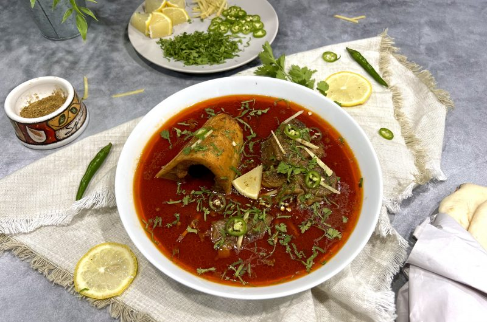

Home
Nihari Recipe

Nihari is a slow-cooked stew originating from South Asia, typically made with beef or mutton, simmered overnight with a blend of spices to create a rich and flavorful dish.
Ingredients
- Beef or mutton
- Nihari spice mix (including fennel seeds, ginger, garlic, and other spices)
- Onions
- Ginger-garlic paste
- Wheat flour (for thickening)
- Ghee or oil
- Salt
- Water
- Fresh herbs (cilantro, green chilies)
- Ginger slices (for garnish)
Instructions
- Heat ghee or oil in a large pot and sauté onions until golden brown.
- Add ginger-garlic paste and cook for a few minutes until fragrant.
- Add the meat and brown it on all sides.
- Add the nihari spice mix and salt, stirring to coat the meat evenly.
- Add water to cover the meat and bring to a boil. Reduce heat to low, cover, and let it simmer for several hours until the meat is tender.
- Mix wheat flour with water to create a slurry and add it to the stew to thicken the gravy. Cook for an additional 30 minutes.
- Garnish with fresh herbs and ginger slices before serving.
- Serve hot with naan or rice.